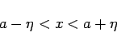
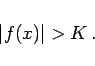
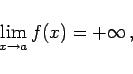
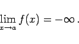

Inhalt Index DeskTop Bronstein

 Funktionen und ihre Darstellung Funktionsbegriff Grenzwert von Funktionen
Funktionen und ihre Darstellung Funktionsbegriff Grenzwert von Funktionen


Das Symbol
bezeichnet den Fall, daß bei Annäherung von x an die Stelle a die Funktion f(x) betragsmäßig über alle Grenzen wächst.
Exakte Formulierung: Die Gleichung (2.17) gilt, wenn sich nach Vorgabe einer beliebig großen positiven Zahl K eine positive Zahl  derart angeben läßt, daß für beliebige x-Werte im Intervall
derart angeben läßt, daß für beliebige x-Werte im Intervall
|  | (2.18a) |
der entsprechende Wert von |f(x)| größer ist als K:
|  | (2.18b) |
Wenn dabei alle Werte von f(x) im Intervall
| (2.18c) |
positiv sind, dann schreibt man
|  | (2.18d) |
sind sie negativ, dann gilt
|  | (2.18e) |